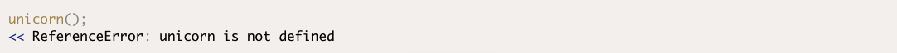
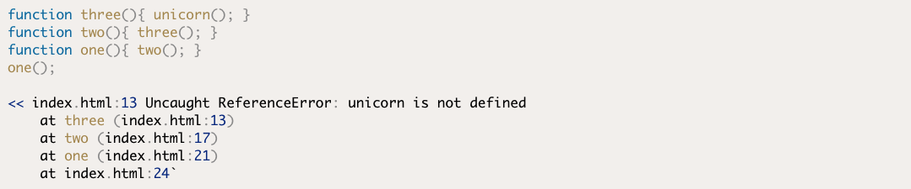
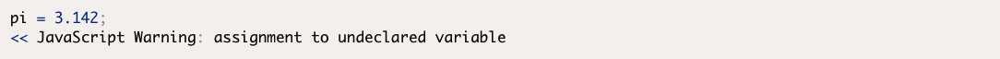

Readings
Testing and Debugging
Errors, Exceptions, and Warnings
Errors are caused when something goes wrong in a program. They are usually caused by one of the following:
- System error ― there’s a problem with the system or external devices with which the program is interacting.
- Programmer error ― the program contains incorrect syntax or faulty logic; it could even be as simple as a typo.
- User error ― the user has entered data incorrectly, which the program is unable to handle.
Exceptions
An exception is an error that produces a return value that can then be used by the program to deal with the error. For example, trying to call a method that is nonexistent will result in a reference error that raises an exception, as you can see in the example below when we try to call the mythical unicorn() function:
Stack Traces
An exception will also produce astack trace. This is a sequence of functions or method calls that lead to the point where the error occurred. It’s often not just a single function or method call that causes an error. A stack trace will work backwards from the point at which the error occurred to identify the original function or method that started the sequence. The example below shows how a stack trace can help you find where an error originates from:
Warnings
A warning can occur if there’s an error in the code that isn't enough to cause the program to crash. This means the program will continue to run after a warning. This might sound good, but it can be problematic, since the issue that produced the warning may cause the program to continue running incorrectly.
The Importance of Testing and Debugging
JavaScript is a fairly forgiving language when it comes to errors; it didn’t implement exceptions at all until ECMAScript version 3. Instead of alerting a user to an error in a program, it just failed silently in the background, and this is sometimes still the case. It might seem like a good idea at first, but the error might give unexpected or incorrect results that nobody spots, or lurk in the background for a long time before causing the program to crash spectacularly. Failing silently makes errors difficult to spot and longer to track down.
Debugging in the Browser
Debugging is the process of finding out where bugs occur in the code and then dealing with them. In many cases, the point at which an error occurs is not always where it originated, so you’ll need to run through the program to see what’s happening at different stages of its execution. When doing this, it can be useful to create what are known as breakpoints, which halt the progress of the code and allow us to view the value of different variables at that point in the program. There are a number of options for debugging JavaScript code in the browser.